Activity: Work with sketch regions
This activity guides you through the process of drawing a sketch to observe when regions are formed. You will also learn how to select regions.
Start Solid Edge.
On the File menu, click→New→ISO Metric Part.
On the Sketching tab→Draw group, choose Line  .
.
Draw a rectangle. Notice that as soon as the last line connects to the first line, a region forms. (1) denotes the first point.
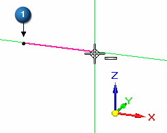
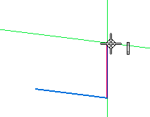
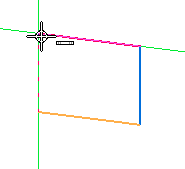
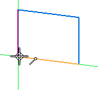
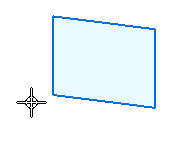
On the Home tab→Select group, choose Select  .
.
Move the cursor over the rectangle and notice the color change. Closed sketches (regions) and faces highlight as the cursor moves over them.
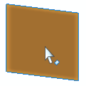
Select the region and notice the color change. The region can be used to create an extrusion or a revolved extrusion. Press the Esc key to end the Select command.
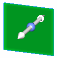
On the Sketching tab→Draw group, choose Rectangle .
Draw another rectangle that overlaps the first rectangle as shown.
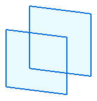
The two overlapping rectangles forms three regions.
Move the cursor over the overlapping rectangles and notice the regions formed.
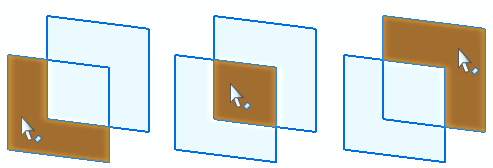
Select each region and notice that the previously selected region is deselected.
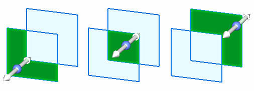
To select multiple regions, select a region and then press the Spacebar.
The Spacebar sets the select mode to add/remove . If you select an element that is already selected, it is deselected. If you select an element not already selected, it is selected.
Create the following select sets. Press Esc after each select set is created.
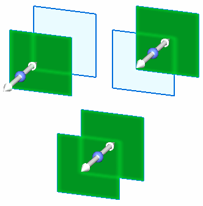
In this activity you learned how to create and select regions. Creating a synchronous feature in Solid Edge requires a region.